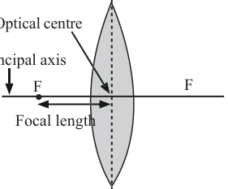
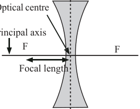

Other common terms used are; real image, virtual image, image distance, v, object distance, u and magnification, m. All these terms take the same meaning as they were defined in the case of image formation by curved mirrors. Figure 5.33 illustrates the terms used in discussing lenses.
It is important to note that, for thin lenses, the pole and the optical centre merely coincide. Moreover, the plane through the principal focus, which is perpendicular to the principal axis, is called the focal plane.


Images formed by lenses
Image formation by lenses is a result of the refraction of light at both surfaces of the lens. As light enters and exits the lens, it is refracted at each boundary. The net effect of this refraction of light at the two boundaries is a change in direction of the light. Because of the geometric shape of a lens, the refracted light rays either converge to a focal point or appear to diverge from a focal point forming an image as shown in Figure 5.30.
Construction of ray diagrams
How lenses form images of objects can be shown by means of ray diagrams. In ray diagrams, sometimes lenses are represented by vertical lines with an appropriate indication to show whether it is a converging lens or a diverging lens. Figure 5.34 shows the representation of converging lens and diverging lenses in ray diagrams.